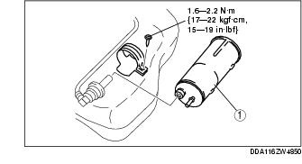

Charcoal canister removal/installation [ZY]
- • Fuel is very flammable liquid. If fuel spills or leaks from the pressurized fuel system, it will cause serious injury or death and facility breakage. Fuel can also irritate skin and eyes. To prevent this, always complete the "Fuel Line Safety Procedure", while referring to the "BEFORE SERVICE PRECAUTION". (See BEFORE SERVICE PRECAUTION [ZY].)
- • If there is foreign material on the connecting area of the quick release connector, it might damage the connector or fuel pipe. To prevent this, disconnect the connector and clean the connecting area before connecting.
1. Remove the fuel tank assembly. (See FUEL TANK REMOVAL/INSTALLATION [ZY].)
2. Disconnect the quick release connector from the charcoal canister. (See QUICK RELEASE CONNECTOR REMOVAL/INSTALLATION [ZY].)
3. Remove in the order indicated in the table.

4. Install in the reverse order of removal.